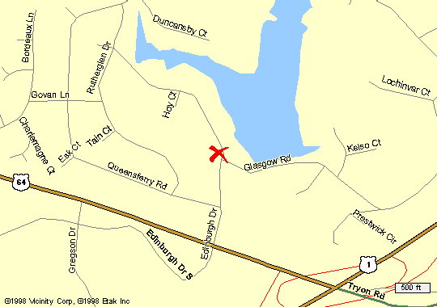

Bear left at the fork (I40 & Wade Ave) after the airport.
Take the 64 exit when 1 and 64 split.
Take I-40 to the intersection with highways 1 & 64.
Bear left at the fork (I40 & Wade Ave) after the airport.
Take the 64 exit when 1 and 64 split.
Edinburgh Drive is the first right turn off 64.
We're on the left side of Edinburgh less than 1/2 mile from the turn.

.